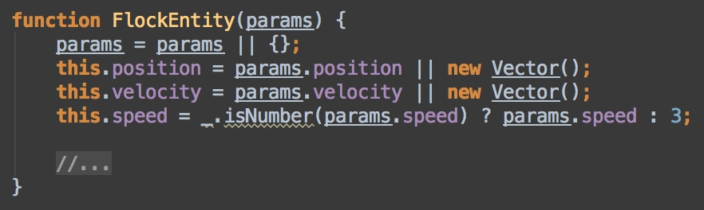
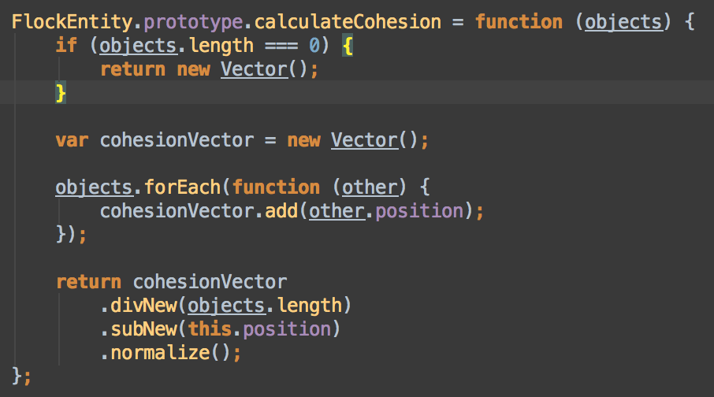
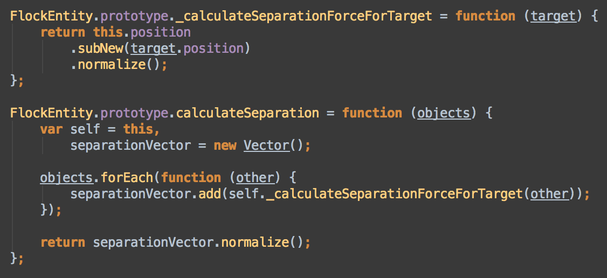
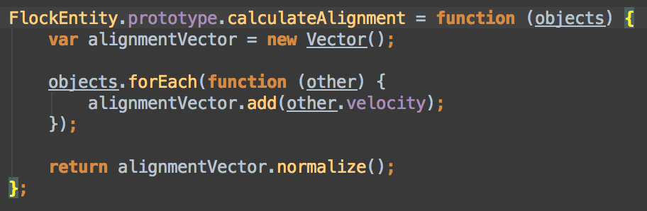

Swarms
Borrowing From Nature
Holden Profit
What is Swarm of Flocking Intelligence?
According to Wikipedia:
"Swarm intelligence (SI) is the collective behavior of decentralized, self-organized systems, natural or artificial."
So, shat exactly does that mean?
In nature, it is a description for how herd animals, insects, and even humans behave in large groups.
In software, it is the emulation of that same behaviour in nature.
What is it used for?
- Data Mining
- Real Scenario Simulation
- Visual Effects for Games and Movies
How would I apply it to my game then?
Simulating the basics for Swarming Intelligence is some simple vector math!
And I'll guide you through how to do just that!
Getting started
The basics of Swarm Intelligence lie in several factors:
- Cohesion
- Separation
- Alignment
- Avoidance (optional)
- Goal Seeking (optional)
Optional Factors
Avoiding walls or obstacles and seeking out a goal aren't required by default but can make things more interesting.
Optional factors influence what and how entities interact with things in their world:
- What is their field of vision?
- How do they respond to potential threats?
- How do they find the goal if one exists?
The Flock Entity
Before doing anything else, we first must define our entity with some basic properties:

The Flock Entity
- position: where the entity is in the world
- velocity: the direction the entity is moving in
- speed: how quickly the entity moves (a scalar for velocity)
Cohesion: Sticking together!
Cohesion is the force that draws the entities of a swarm together.
So how does it work?
Cohesion: Sticking together!

Cohesion: Sticking together!
For a group of peer entities:
- Find the center of all the peers
- for peer in peers
- center += peer.position
- center /= peers.length
- Calculate distance between this entity and the center and normalize it
- Add the result to this entity's velocity
Cohesion: Sticking together!

Separation: Maintain some Distance
Separation is the force that pushes entities apart enough to have some personal space
So how does it work?
Separation: Maintain some Distance

Separation: Maintain some Distance
For a group of peer entities:
- Calculate velocities heading away from each peer and add them together
- for peer in peers
- steer = this.position - peer.position
- normalize steer
- total += steer
- Add the result to this entity's velocity
Separation: Maintain some Distance

Alignment: Going Forward Together
Alignment is pretty self explanatory, each entity tries to head in the same direction as it's peers
So how does it work?
Alignment: Going Forward Together

Alignment: Going Forward Together
For a group of peer entities:
- Calculate the average velocity
- for peer in peers
- averageVelocity += peer.velocity
- normalize averageVelocity
- Add the result to this entity's velocity
Alignment: Going Forward Together

Avoidance: Staying away from Threats and Obstacles
Avoidance works exactly like separation for threats and most obstacles.
For walls, it's a bit different.
So how does it work?
Avoidance: Staying away from Threats and Obstacles
For avoiding a wall:
- If too close to a given wall
- for peer in peers
- averageVelocity += peer.velocity
- normalize averageVelocity
- Add the result to this entity's velocity